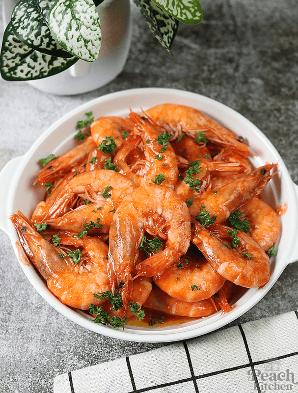

Description
Garlic Butter Shrimp is a sweet, savory, and buttery seafood dish that takes only 20 minutes to make.
Ingredients
- 1 lb large shrimp, cleaned
- 4 tablespoons butter
- 1 head garlic, minced
- 1/2 cup lemon-lime soda
- 1 tablespoon ketchup
- Salt and pepper to taste
Steps
- Soak the shrimp in lemon-lime soda for 10 minutes, then drain and save the liquid.
- Melt butter in a pan over medium heat and fry the garlic until fragrant.
- Add the shrimp and cook for 2 minutes on each side until pink.
- Pour in the saved soda and ketchup, then simmer until the sauce thickens.
- Season with salt and pepper and serve with warm rice.